iPhone
Mide donde sea, con Wi-Fi o datos móviles.
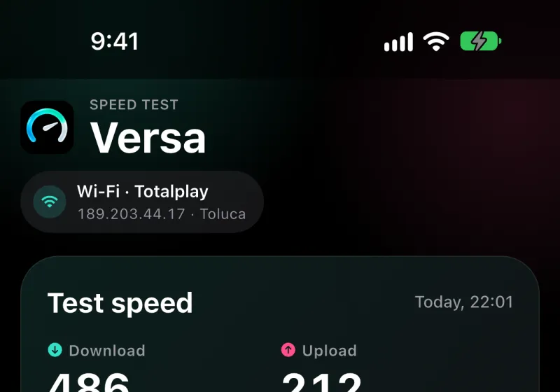
Speed Test — Versa
No solo megas. Versa te dice si tu conexión está lista para jugar, ver 4K, hacer videollamadas y trabajar.
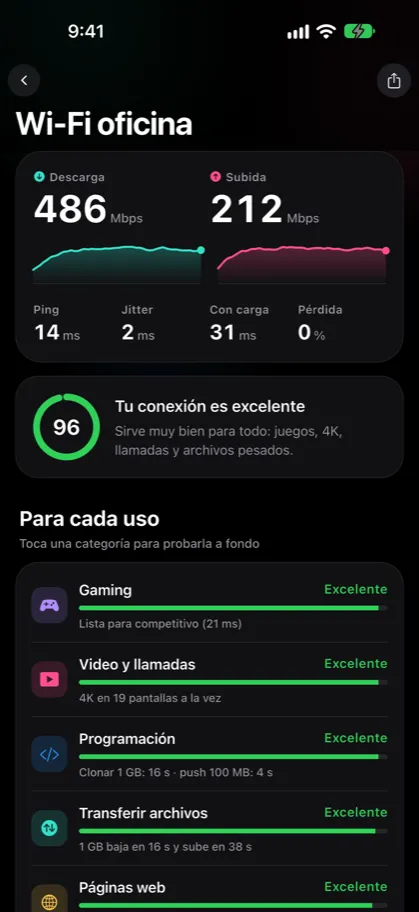
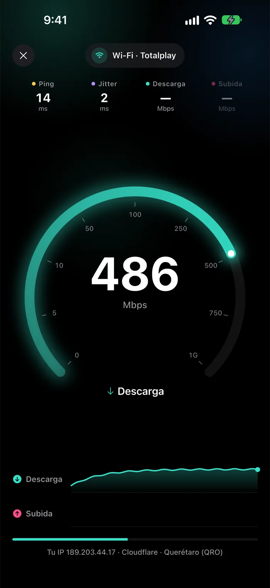
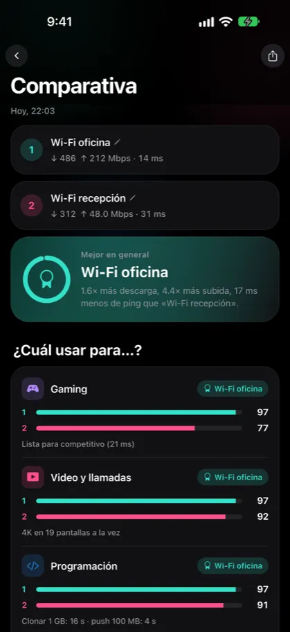
¿Para qué sirve?
Cada prueba termina con una respuesta clara para cada cosa que haces en internet, además de ping con carga, jitter y pérdida de paquetes.
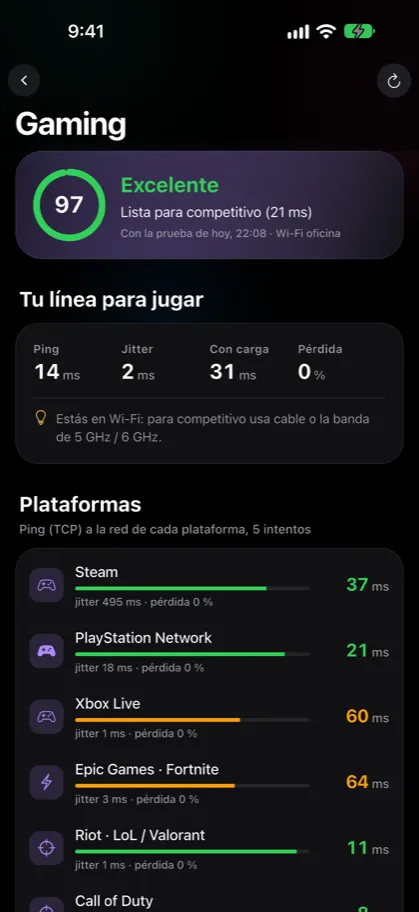
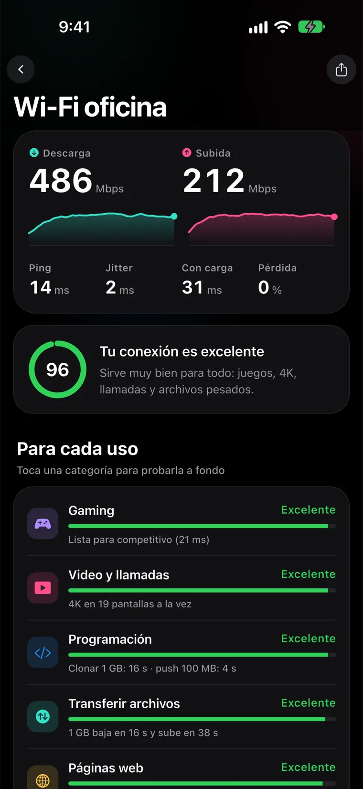
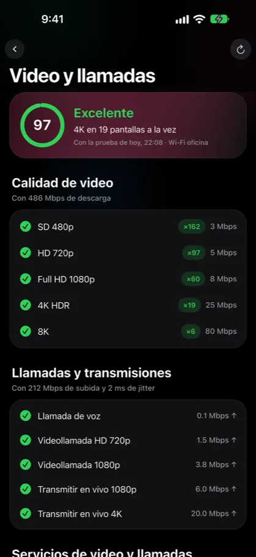
Compara redes
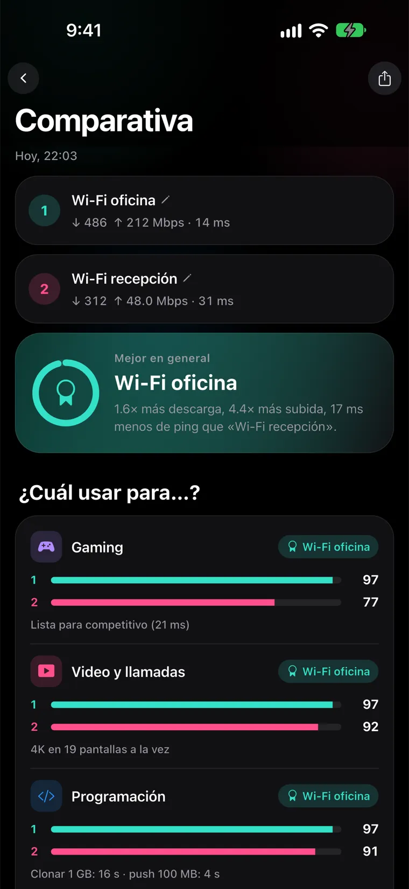
Estés donde estés
Versa mide contra los servidores más cercanos y elige tu mejor región para jugar por ping, de la Ciudad de México a Tokio.
¿Está caído?
Revisa PlayStation Network, Xbox Live, Steam, Discord, WhatsApp, Netflix, ChatGPT y más. Versa te dice si un servicio está caído para todos, solo desde tu red, o si el problema es tu internet.
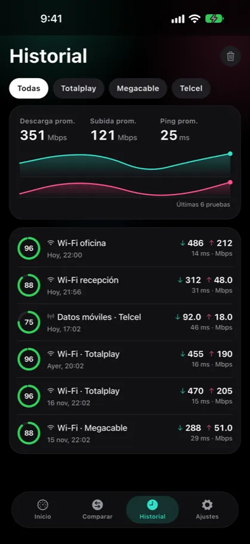
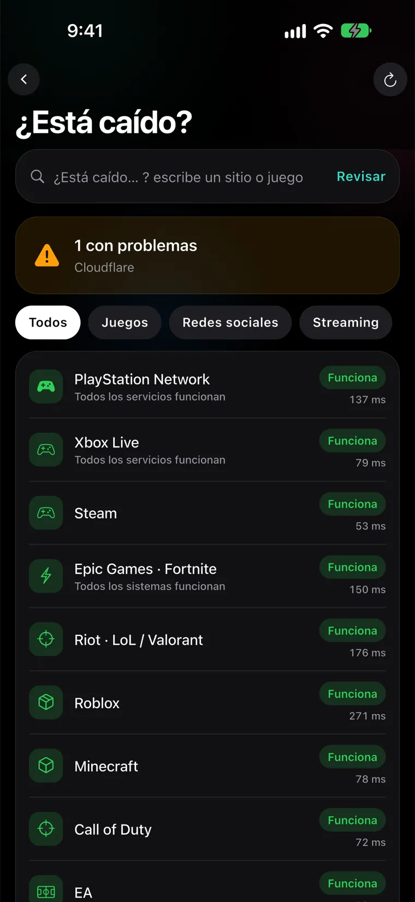
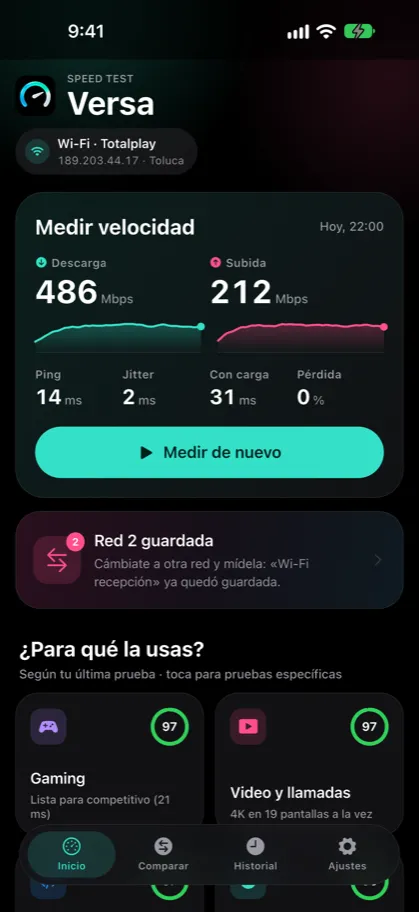
iPhone · iPad · Mac · Android
Descarga gratis. Una compra opcional quita los anuncios y desbloquea las herramientas Pro para siempre, en todos tus dispositivos Apple.
Muy pronto en la App Store y Google Play.
Mide donde sea, con Wi-Fi o datos móviles.

Barra lateral pensada para la pantalla grande.

Una ventana nativa que se ajusta a tu escritorio.

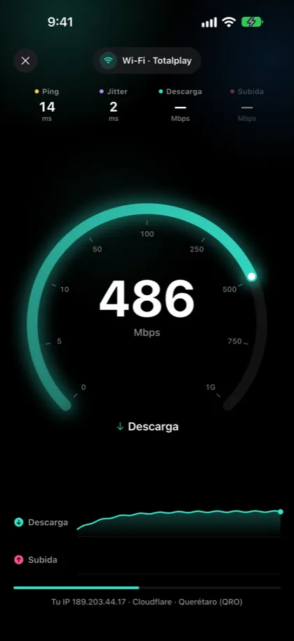
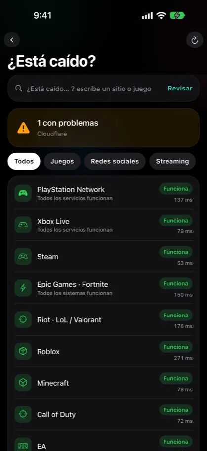
Privacidad